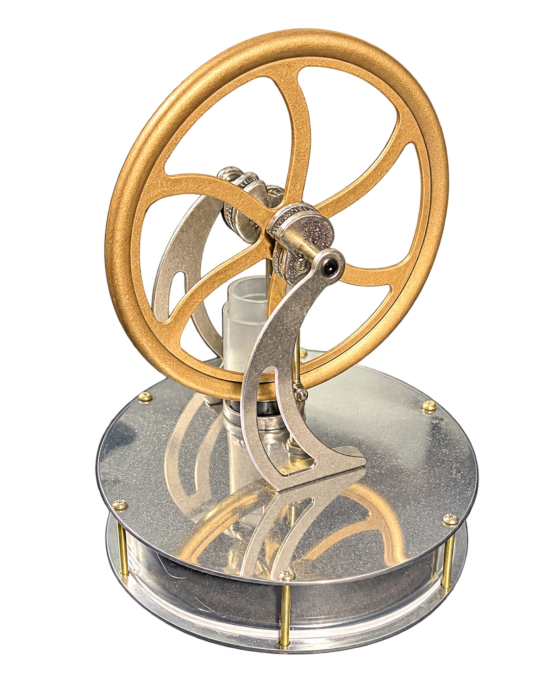
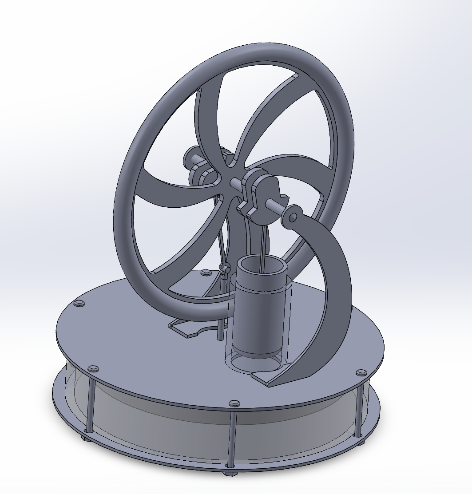

Project Overview
This project explored the performance of a real Low Temperature Differential Stirling engine through physical testing, temperature measurement, rotational-speed measurement, data analysis, and 3D CAD documentation.
Physical Engine & CAD Model
The project connected a real mechanical system with digital engineering documentation. The physical Sunnytech LT001 was used for testing and measurement, while a complete SolidWorks assembly captured the engine's geometry and component relationships.
Physical Engine

SolidWorks Model

Key Results
Testing showed a strong relationship between the thermal gradient across the engine and the resulting flywheel speed.
Experimental Approach
The experiment was designed to measure how flywheel speed changes as the temperature difference across the engine increases. Room temperature was maintained near 22°C while the lower plate temperature was varied using water at different temperatures.
Establish Baseline
Maintained room temperature near 22°C to create a consistent reference temperature for the upper plate.
Apply Thermal Input
Placed the engine over water at different temperatures and allowed the lower plate to reach operating temperature.
Measure RPM
Recorded flywheel rotations over a 10-second period and repeated each condition for multiple trials.
Analyze Data
Compared rotational speed with temperature difference and generated a linear regression model.
Reverse-Temperature Test
An additional test placed the engine over an ice block, reversing the thermal gradient. The flywheel rotated in the opposite direction and reached approximately -70 RPM at a temperature difference of -21.5°C.
Performance Data
The measured results showed an approximately linear increase in flywheel RPM as the temperature difference increased.
Regression Model
The experimental data produced the relationship:
Setting RPM equal to zero gives the estimated minimum temperature difference required for startup:
The results show that the engine can begin operating with a relatively small thermal gradient.
3D Model & Engineering Files
The project includes a complete 3D assembly and detailed engineering drawings of the engine components. These files provide a closer look at the geometry, component layout, and mechanical relationships within the Sunnytech LT001.
Project Summary
This project combined experimental testing, thermodynamics, mechanical systems, data analysis, and CAD documentation to evaluate the performance of a real Low Temperature Differential Stirling engine.
Testing showed that flywheel speed increased approximately linearly with temperature difference. The experimental model predicted an estimated startup temperature difference of approximately 3.3°C, while the reverse-temperature test confirmed that changing the direction of the thermal gradient also reverses the direction of flywheel rotation.